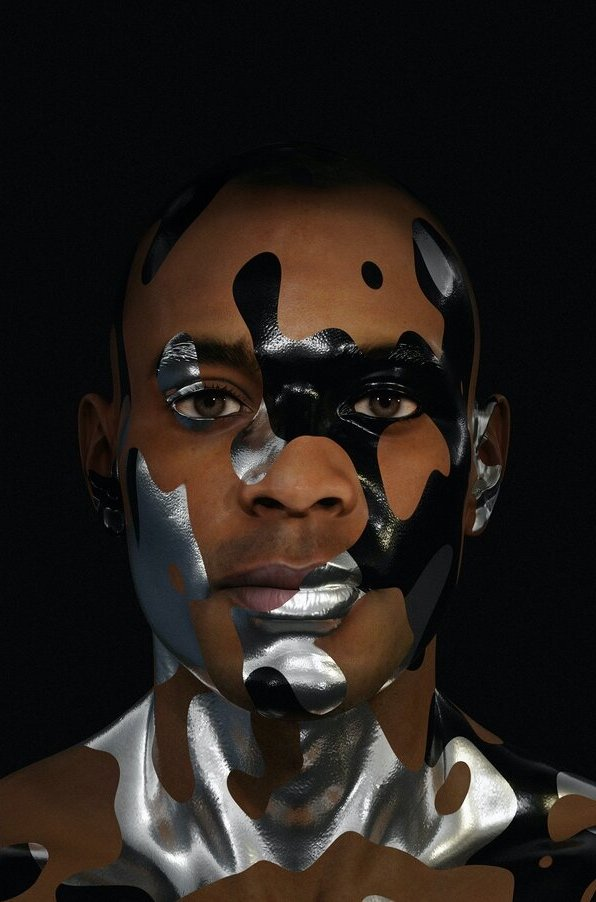

due Oct 18
This assignment is inspired by the work of Adam Harvey. Using whatever materials you have at hand (paper, tape, eyeliner, etc), create a camouflage makeup "look" that allows you to be recognized by other humans but not the face detection model below.Take a screenshot of your final "look" and submit it in the #assignments channel.
Take a look at these examples for inspiration (from me, CV Dazzle, and Face Nature):-

- 
Some tips from C.V. Dazzle:
Makeup Avoid enhancers. They amplify key facial features. This makes your face easier to detect. Instead apply makeup that contrasts with your skin tone in unusual tones and directions: light colors on dark skin, dark colors on light skin.
Nose Bridge Partially obscure the nose-bridge area. The region where the nose, eyes, and forehead intersect is a key facial feature.
Eyes Partially obscure one or both of the ocular regions. The symmetrical position and darkness of eyes is a key facial feature.
Instead of concealing your face, modify the contrast, tonal gradients, and spatial relationship of dark and light areas using hair, makeup, and/or unique fashion accessories.
obscuring the elliptical shape of a head can also improve your ability to block face detection. Use hair, turtlenecks, or fashion accessories to alter the expected elliptical shape.
Asymmetry Face detection algorithms expect symmetry between the left and right sides of the face. By developing an asymmetrical look, you can decrease your probability of being detected.